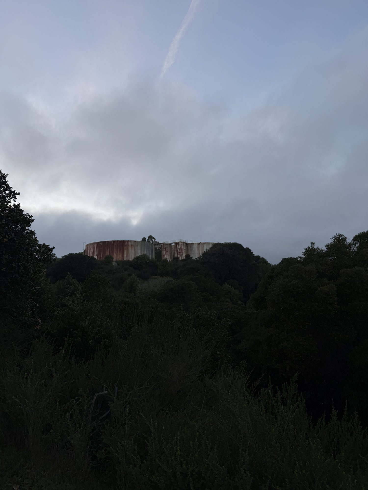
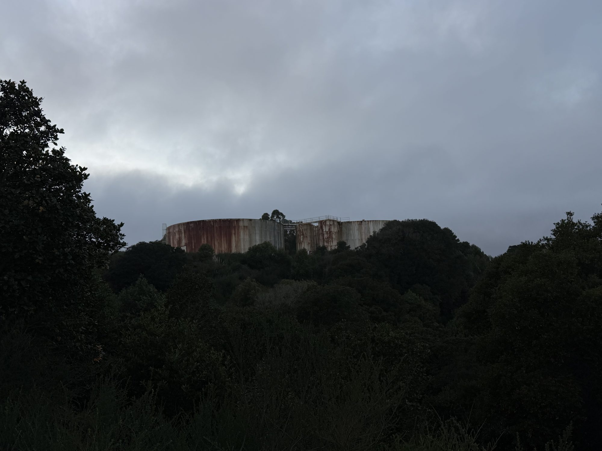
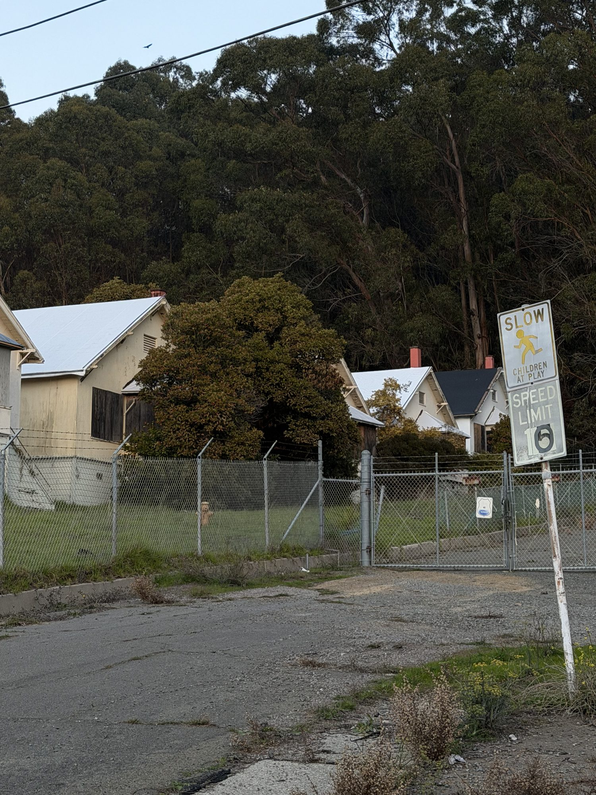
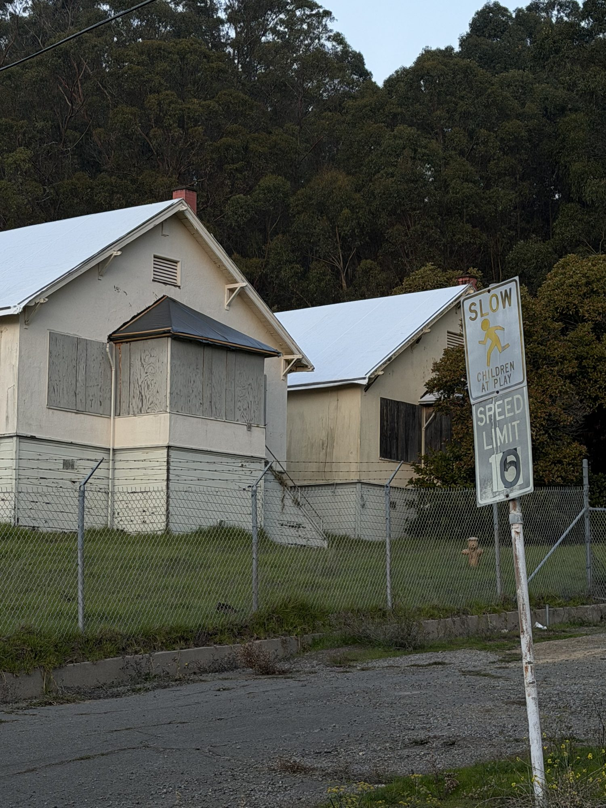
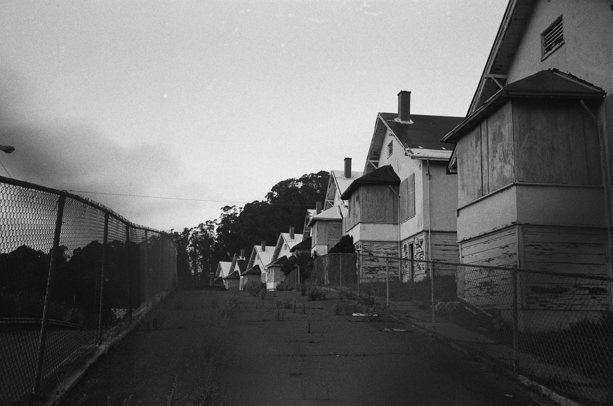

Approximate area only. Exact locations aren't shared.
Point Molate has a wild history. In 1907 it was Winehaven, the biggest winery in the world. Prohibition killed that, and in 1941 the Navy turned it into a fuel depot, which ran into the 1990s. The little cottages here were Navy housing, and now they're just slowly falling apart on the edge of the bay.
It's very cool to drive through. The old housing is still standing and slowly rotting, and there's a children's playground right in the middle of it, falling apart. But it's very securely fenced, and there's a security guard who will come over pretty quickly if you look a little too interested for a little too long.
Worth driving by. Not worth going out of your way for.




